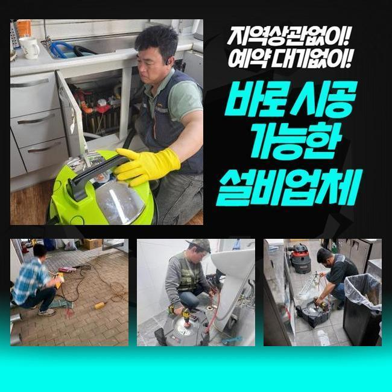
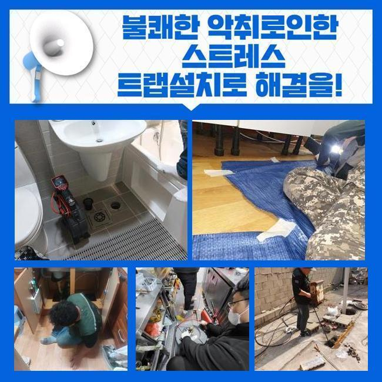
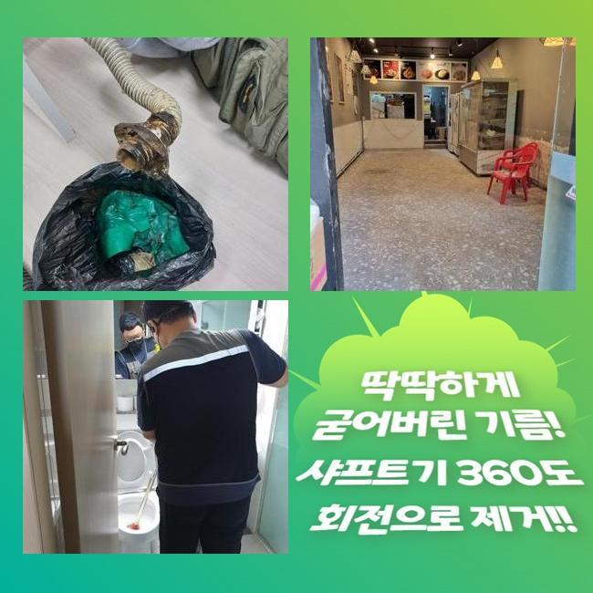
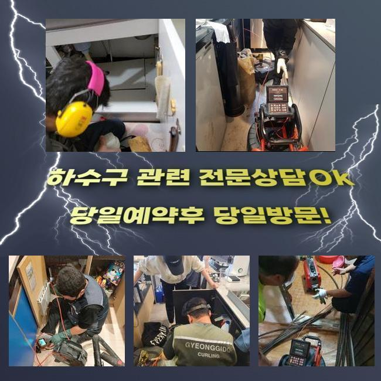
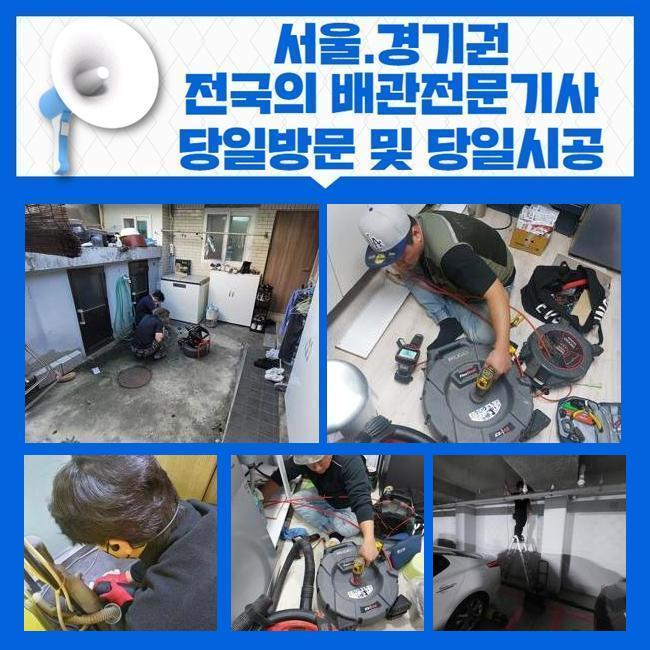
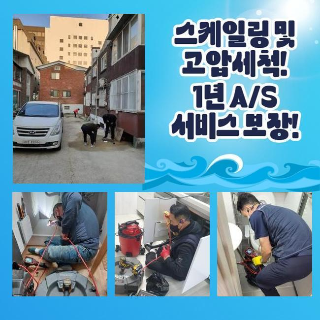
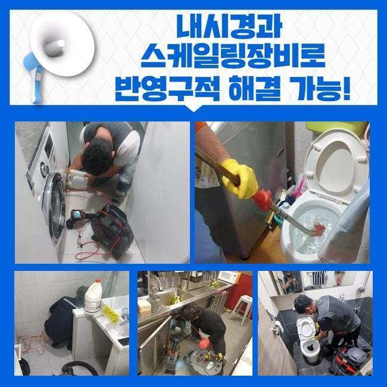

🏠 과림동싱크대배수구역류 논곡동 하수구뚫는비용 배관막힘
용인 싱크대막힘 전문 시공 후기

📋 작업 개요
- 위치: 용인
- 서비스 유형: 싱크대막힘, 하수구막힘, 배관막힘, 집수정막힘, 역류해결, 뚫는업체, 배관청소, 배관보수, 악취차단
- 작업 일시: 2024. 11. 9. 16:13
- 업체명: 하수구수사대 (010-5615-2118)
🔍 문제 상황
과림동싱크대배수구역류 논곡동 하수구뚫는비용 배관막힘
하루에도 몇 번을 쓰는 화장실 하수구 차단으로 인해 용수가 그대로 고이다 못해 내측에서 혼탁한 물도 솟구쳐서 방문 진단을 해보기로 했습니다
샤워기를 써서 물을 곧장 내보내는 때도 그렇지만 개수대나 싱크대에서 수도를 틀었을 경우에도 막힘과 역류가 어김없이 말썽을 부리곤 했습니다
혹시나 이 글을 확인하고 계시는 현재 거주하고 계신 장소에서도 동일한 트러블이 생겨서 하수 시스템 관리자를 서칭하시면 저희 글을 봐주세요!
욕실 바닥부 배수관이 마비되었을 때의 배경은 어떻게 되는지와 어떤 방식을 접목해서 수리하는 지 공개하겠습니다
건강한 시스템이면 하수구로 유입되어야 하는 물이 불특정한 근원부때문에 역행돼서 저면을 가득 메워서 공간을 오염시키고 있었습니다
이는 욕실 개수대나 싱크대에서 물을 열어주는 상황에서도 유사한 공통점을 지닌 사태가 초래되는 중이었습니다
저희가 다뤄온 케이스를 회상해보면 화장실 하수가 고장났을 때 물이 울컥대며 차는 사태의 사유는 유사성을 띱니다
평범한 주거지를 보자면 테라스 쪽이나 욕실 개수대 밑의 배관이 동시에 수렴되어서 외부 정화조로 향하는 구조로 설계되어 있는 경우가 대부분입니다
그렇게 같은 곳에서 만나서든 영역이 건물의 메인관인데 막대한 중책을 담당하는 시스템인만큼 잘 관리해야 해요

🔎 원인 분석
💡 전문가 진단: 정밀 진단 장비를 사용하여 슬러지의 고착 여부를 판명하고 타격/세척 작업을 실시했습니다.
말하자면 교차로에 사고가 난 격이니 집안의 화장실을 비롯한 건물 전반의 모든 곳에서 물을 틀게 되면 아래로 폐수 처리가 안되다보니 물의 범람이 잇따르게 됩니다
이물질로 가득 차 있는 메인 수로를 뚫어낸다면 어려움이 극복될 것입니다
가장 많은 배관이 달려있는 보일러 근방으로 향해서 문제점이 무엇인지를 진단을 해보기로 시도했습니다
통계적으로 예측을 해보자면 막힘이 제일 극심한 곳이 보일러실일 가능성이 농후해서 여기만 잘 수습을 해주면 중첩된 업무들을 감소시키고 빠르게 보수를 마칠 수 있을 듯 했어요
고질적인 막힘을 유발한 원흉인 물질의 종류와 상태를 상세히 캐치해내기 위하여 특화된 관찰 장치를 관로의 내측으로 넣어서 검토 해보았어요
어떤 전문업체에서는 특화된 관찰 장치를 통한 배관의 상태 분석을 하는 중요한 부분을 작업을 하는 사례가 제일 일반적이에요
이는 전문성이 있는 사람의 대처 방안이라고는 단정할 수 없고 이슈들을 전체적으로 발견하는 데에 못미칠 때가 많을 것입니다
장애가 발생한 배관 쪽에 이슈를 일으킨 이유가 무엇일까 정확히 식별해낸 후에 작업에 돌입해야만 재발이 일어나지 않게끔 문제를 탈피할 수 있어요
노즐에 달린 내시경으로 관측을 해보니 스크린에는 점도 높게 뭉쳐져있는 노폐물들이 가득하니 엉겨붙어 있음이 보이더라고요
앞서 욕실 안쪽에 매설된 배관들은 싱크대 쪽 배관과 이어져서 바깥으로 나가는 형상이라고 이야기했었는데요

🔧 작업 과정
물속의 미립자와 쓰레기들이 점차 모여들고 합쳐져서 관로를 방해하게 된 부분이 배관이 연쇄적으로 막히는 사건의 사유로 작용한 것 같았어요
장기간 누적이 되면서 어마무시한 장애요소가 된 노폐물을 치워준다면 속으로 치고 들어오는 물도 끝나게 될 것 입니다
이럴 때 활용하는 장치는 하수구를 정비하는 과정에서 여러 차례 찾게 되는 전동식 스프링이라고 부르는 관통 기구입니다
노폐물을 효과적으로 치워주는 스프링 모양을 갖고 있는 구성 요소와 본체를 결속한 이후에 작동시켜요
조립된 장치의 끝부분을 물길을 내야만 하는 위치에 투입을 해서 모터를 돌리기 시작하면 핸들부터 액세서리에 이르기까지 힘이 고르게 전달됩니다
돌리는 힘을 활용하여 장치가 좌우로 흔들리는데 잔뜩 이물질이 낀 배관에 데미지를 가하는 것입니다
해당 작업을 통과하면 배수로의 영역에 덕지덕지 딱 달라붙어 있었던 이물질이 떨어져 나가면서 외부로 유출이 되거나 걸어서 꺼내주면서 내부가 깨끗하게 되는 겁니다
미동없는 환경이 유지됐었던 건물 바깥쪽의 집수정이 저희의 스프링 장비로 관통을 해주고 나자 성과가 바로 눈으로 보였는데요
오래 지속을 해준 다음에 재차 내부 분석을 해보니 유분기가 가득 했었던 혼탁한 물이 제거되고 순수한 물이 원활하게 정상 경로로 나가더라고요
내부가 몰라보게 달라진 현황은 부착됐던 쓰레기들이 일시에 해소되어 하수관이 복구되었다는 증거물입니다
얼마간의 하수구 뚫는 작업을 하고 난 후 다시 카메라를 메인배관에 넣어 상태를 확인해보기로 했습니다
습기로 인해 부패되면서 냄새까지 조성했었던 오염물질은 흔적 없이 사라져서 통째로 바꾼 것과 같이 깔끔하게 개선된 점을 직접 보실 수 있습니다
어느 건물이라도 빠짐 없이 설거지 목욕 등의 활동을 하면 쓰레기도 같이 떠내려가기 때문에 오염물들이 누적되다보면 오래 방치가 된다면 물이 턱 중지된다거나 미생물이 증식하는 등의 다수의 문제들이 단골로 찾아오게 됩니다
매 건물에서 동등하게 유발될 수 있는 사고이므로 오늘 알려드린 바와 같은 배관의 완벽도 높은 정화작업을 주기적으로 받으려는 노력이 안정성을 위해서라도 중요합니다
오수가 역행을 하던 문제도 완전 나아졌는지 꼼꼼히 봐줬고 막혀있었던 현장의 실무를 마무리 하기로 결정하였습니다
실내가 한층 깔끔해진 것을 바로 눈치챌 수 있었으며 기분이 흐뭇했습니다


✅ 작업 완료
여러 장소를 옮겨 다니면서 수돗물을 배출해 보았는데 전혀 지체되지 않고 매끄럽게 빠져나가는 것도 여러 차례 체크해봤어요
욕실 쪽 오류로 일어난 다수의 설비 오류가 야무진 청소를 이어간 덕에 완성도 높게 청소를 마쳤습니다
고객님이 계신 장소 포함 어느 곳에서든 하수관로가 막혀버리는 사태가 탄생하면 문제 근원부와 해결 전략이 오늘 보여드릴 사례와 거의 동일하다고 보시면 됩니다
지금 겪고 있는 문제가 무엇무엇인지 간략하게 나마 저희에게 언급을 해주시면 이를 바탕으로 속시원하게 수리해 드리겠습니다
방문은 편하신 시간에 맞춰드리니 홀로 고군분투하지 마시고 소중한 하수 설비를 얼른 회복되게 만들어보시면 좋겠습니다




⚠️ 주방 싱크대 배관 막힘 예방 수칙
- ✅ 기름기가 묻은 식기나 프라이팬은 설거지 전 키친타올로 반드시 기름때를 닦아내세요.
- ✅ 주기적으로 싱크대 개수대에 뜨거운 물을 가득 받아 한 번에 내려 배관 내부 기름을 씻어내세요.
- ✅ 배수구 거름망을 미세한 필터로 사용하시고 음식물 찌꺼기가 틈으로 새어 들지 않게 관리하세요.
- ✅ 베이킹소다와 식초를 뜨거운 물과 함께 일주일에 한 번씩 부어주면 배관 살균과 막힘 예방에 좋습니다.
💡 핵심 정리
- 확실한 장비 작업(내시경 점검 및 샤프트 스케일링)으로 원인을 뿌리 뽑습니다.
- 작업 후 1년 이내에 동일한 부위 재발 시 100% 무상 A/S 서비스를 보장합니다.
- 서울 · 경기 · 인천 전 지역에 24시간 언제든 긴급 출동할 수 있도록 항시 대기 중입니다.
❓ 자주 묻는 질문 (FAQ)
🚨 용인 싱크대막힘 문제로 고민이신가요?
정확한 원인 진단과 확실한 시공으로 재발 없는 해결을 약속드립니다.
24시간 긴급 출동 | 서울 · 경기 · 인천 전지역 | 1년 내 재발 시 무상 A/S